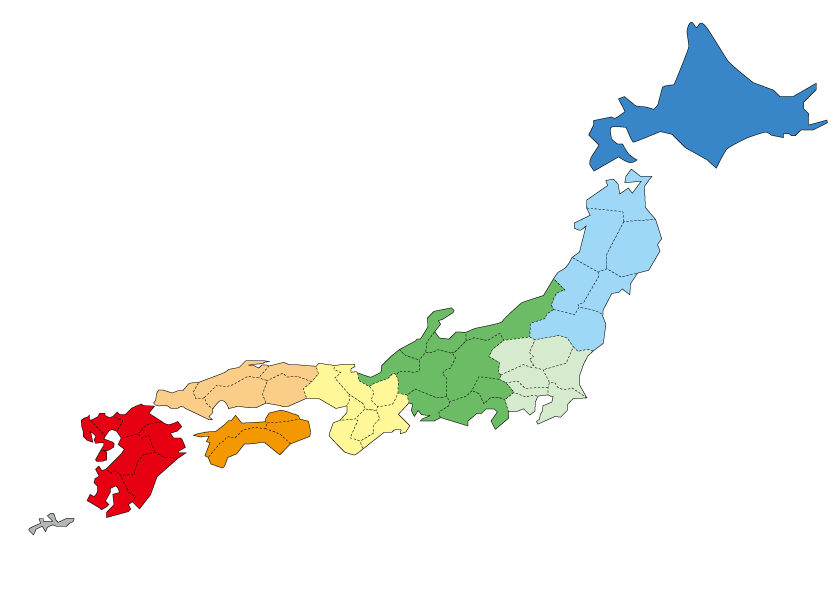

日本地図のどこかをクリックしてください

以下に県名のリストが表示されます↓↓↓
北海道地方
北海道
東北地方
青森
岩手
秋田
宮城
山形
福島
関東地方
茨城
栃木
群馬
埼玉
東京
千葉
神奈川
中部地方
新潟
富山
石川
福井
岐阜
静岡
山梨
長野
愛知
関西地方
奈良
滋賀
京都
大阪
兵庫
和歌山
三重
京都
中国地方
鳥取
広島
岡山
島根
山口
四国地方
高知
徳島
香川
愛媛
九州地方
福岡
佐賀
長崎
熊本
宮崎
鹿児島
沖縄